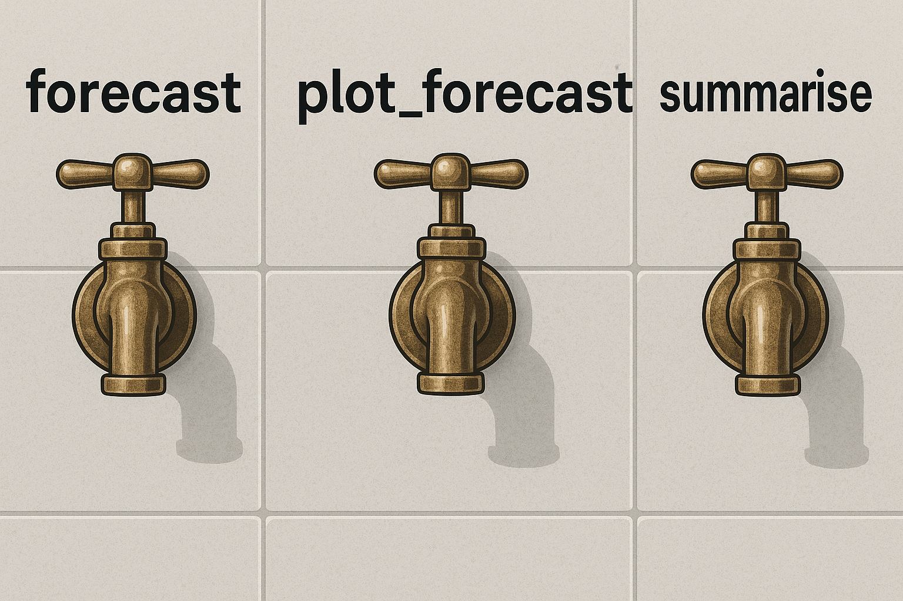

Code
#* @get /hello
function(name = "World") {
list(message = paste("Hello,", name))
}
Imagine if your data could flow like water — available when needed, filtered to your taste, and ready to serve. As R users, we often write powerful analyses that live inside scripts or notebooks, waiting to be rerun or reknit. But what if someone else — a dashboard, a spreadsheet, even a non-technical colleague — could turn a faucet and get just the data or insight they need, right when they need it?
Enter plumber: the package that transforms your R code into web-accessible endpoints. With just a few annotations, you can create lightweight, on-demand services — faucets — that deliver filtered data, summaries, forecasts, and even dynamic plots.
In this tutorial, we’ll build a trio of “data faucets” using the classic gapminder dataset. Each one will be activated via a simple HTTP GET request, controlled through query parameters — just like adjusting the knobs on a sink. No dashboards, no shiny, no server frameworks. Just clean, functional API plumbing in R.
plumber is an R package that exposes R functions as web API endpoints. That means you can call your R code over HTTP — from a browser, a spreadsheet, or another app — and get results back as JSON.
In this metaphor, we’ll treat your code like a faucet. A faucet doesn’t boil water or change its chemistry — it just controls when, where, and how water flows. Similarly, a plumber endpoint gives users access to a very specific piece of logic you’ve defined in R: filter this data, summarize that column, draw a plot. They don’t need to understand the pipework underneath — just turn the handle.
A typical plumber endpoint looks like this:
#* @get /hello
function(name = "World") {
list(message = paste("Hello,", name))
}Visiting http://localhost:8000/hello?name=Alice would return:
{
"message": "Hello, Alice"
}In the rest of this article, we’ll build more sophisticated faucets — not to say hello, but to summarize, forecast, and visualize data from gapminder.
Before you can open the tap, you need a water supply. In our case, that’s the gapminder dataset — a tidy, time-series snapshot of global development indicators. It’s compact, well-structured, and ideal for building API examples without external dependencies.
Let’s load the dataset and take a quick look:
library(gapminder)
library(dplyr)
data <- gapminder::gapminder
glimpse(data)You’ll see six columns:
country: Name of the country
continent: Continent the country belongs to
year: Observation year (1952–2007 in 5-year steps)
lifeExp: Life expectancy
pop: Population
gdpPercap: GDP per capita
Think of this dataset as a water tank — structured, pressurized, and ready to be tapped. Every API call we’ll build will draw from this tank, apply some filtering or transformation, and return a clean stream of results.
Here’s a simple example using dplyr to filter the data manually — we’ll soon automate this behind an endpoint:
data %>%
filter(country == "Poland", year >= 1972, year <= 2002) %>%
select(year, lifeExp)This snippet answers a narrow question: How has life expectancy changed in Poland between 1972 and 2002?
Now let’s build a faucet that does this — on demand.
Our first faucet delivers summary statistics for any country and development metric in the dataset. Think of it as a cold-water tap: you specify the country and the metric, and it returns a quick, refreshing snapshot — no modeling, no visualization, just facts.
💡 Example request:
GET /summary?country=Poland&metric=lifeExpExpected response:
{
"country": "Poland",
"metric": "lifeExp",
"min": 61.0,
"max": 75.5,
"mean": 70.34,
"median": 71.0,
"latest": 75.5
}Let’s write an R function that accepts a country and a metric, filters the dataset accordingly, and returns a named list of basic statistics:
summary_stats <- function(data, country, metric) {
if (!(metric %in% names(data))) {
stop("Metric not found in dataset")
}
df <- data %>%
filter(country == !!country) %>%
select(year, value = all_of(metric)) %>%
arrange(year)
if (nrow(df) == 0) {
stop("No data found for selected country")
}
list(
country = country,
metric = metric,
min = min(df$value, na.rm = TRUE),
max = max(df$value, na.rm = TRUE),
mean = mean(df$value, na.rm = TRUE),
median = median(df$value, na.rm = TRUE),
latest = tail(df$value, 1)
)
}Now we add this function to a plumber route. Here’s how to define a /summary endpoint that accepts query parameters for country and metric:
# plumber.R
#* @param country The name of the country (e.g. "Poland")
#* @param metric The metric to summarize (e.g. "lifeExp", "gdpPercap")
#* @get /summary
function(country = "", metric = "lifeExp") {
tryCatch({
summary_stats(data, country, metric)
}, error = function(e) {
list(error = e$message)
})
}Save this file and launch the API with:
pr <- plumber::plumb("plumber.R")
pr$run(port = 8000)Now try visiting:
http://localhost:8000/summary?country=Poland&metric=lifeExp💡 Tip: if you get an error, check spelling — plumber doesn’t do autocomplete!
You’ve now built your first live data faucet: users can request a country and a metric, and get real-time stats — no dashboards, no spreadsheets.
Our next faucet doesn’t just report the past — it predicts the future. Given a country, a metric (like life expectancy), and a time range, it builds a linear trend model and forecasts future values for a specified horizon.
Think of this as a hot water tap: it uses energy (a model) to project where things are going — not just where they’ve been.
💡 Example request:
GET /forecast?country=Poland&metric=lifeExp&from=1972&to=2002&horizon=10Expected response (truncated):
[
{ "year": 1972, "value": 70.1 },
...
{ "year": 2002, "value": 75.5 },
{ "year": 2007, "value": 76.4 },
{ "year": 2012, "value": 77.3 }
]lm()Let’s write a function that:
Filters the dataset by country and year range
Fits a linear regression model (lm(value ~ year))
Forecasts horizon years into the future (at 5-year intervals)
forecast_lm <- function(data, country, metric, from, to, horizon = 10) {
df <- data %>%
filter(country == !!country, year >= from, year <= to) %>%
select(year, value = all_of(metric)) %>%
arrange(year)
if (nrow(df) < 3) stop("Not enough data points to build a model")
model <- lm(value ~ year, data = df)
last_year <- max(df$year)
future_years <- tibble(year = seq(last_year + 5, last_year + horizon, by = 5))
preds <- predict(model, newdata = future_years)
forecast <- bind_rows(
df,
tibble(year = future_years$year, value = preds)
)
forecast
}🧩 Creating the /forecast endpoint
# plumber.R
#* @param country Country name
#* @param metric Metric to forecast
#* @param from Start year
#* @param to End year
#* @param horizon Years to forecast beyond `to`
#* @get /forecast
function(country = "", metric = "lifeExp", from = 1962, to = 2007, horizon = 10) {
tryCatch({
from <- as.numeric(from)
to <- as.numeric(to)
horizon <- as.numeric(horizon)
result <- forecast_lm(data, country, metric, from, to, horizon)
result
}, error = function(e) {
list(error = e$message)
})
}Start or reload your plumber API, then try:
http://localhost:8000/forecast?country=Poland&metric=lifeExp&from=1972&to=2002&horizon=10You now have a faucet that models and delivers future insights on the fly.
So far, your API can serve stats and forecasts — but sometimes numbers just don’t flow as well as pictures. This final faucet will return a line chart showing the historical and forecasted values as a single visual stream.
This is the designer faucet — it doesn’t just give you water, it does it with flair.
💡 Example request:
GET /forecast?country=Poland&metric=lifeExp&from=1972&to=2002&horizon=10&plot=trueExpected response:
{
"plot": "data:image/png;base64,iVBORw0KGgoAAAANSUhEUgAA..."
}This base64-encoded string can be rendered directly in an HTML img tag, embedded in dashboards, or downloaded as a PNG.
We’ll use ggplot2 to draw the chart and base64enc to encode the image for API delivery.
library(ggplot2)
library(base64enc)
plot_forecast <- function(df, country, metric) {
p <- ggplot(df, aes(x = year, y = value)) +
geom_line(color = "steelblue", size = 1) +
geom_point(size = 2) +
theme_minimal() +
labs(
title = paste("Forecast for", country),
y = metric, x = "Year"
)
tf <- tempfile(fileext = ".png")
ggsave(tf, plot = p, width = 6, height = 4, dpi = 150)
dataURI(file = tf, mime = "image/png")
}/forecast endpoint with plot=TRUELet’s update the existing endpoint to return either raw data or a plot, based on a plot parameter:
#* @serializer contentType list(type='image/png')
#* @get /forecast
function(country = "", metric = "lifeExp", from = 1962, to = 2007, horizon = 10, plot = "false") {
tryCatch({
from <- as.numeric(from)
to <- as.numeric(to)
horizon <- as.numeric(horizon)
plot <- tolower(plot) == "true"
result <- forecast_lm(data, country, metric, from, to, horizon)
if (plot) {
p <- ggplot(result, aes(x = year, y = value)) +
geom_line(color = "steelblue", size = 1) +
geom_point(size = 2) +
theme_minimal() +
labs(
title = paste("Forecast for", country),
y = metric, x = "Year"
)
tf <- tempfile(fileext = ".png")
ggsave(tf, plot = p, width = 6, height = 4, dpi = 150)
# Return file connection (plumber will serve it directly as image/png)
readBin(tf, "raw", n = file.info(tf)$size)
} else {
result
}
}, error = function(e) {
list(error = e$message)
})
}Visit this in your browser:
http://localhost:8000/forecast?country=Poland&metric=lifeExp&from=1972&to=2002&horizon=10&plot=true
At this point, you’ve built a small but mighty collection of data faucets:
/summary delivers quick statistics based on country and metric
/forecast returns a time-extended series — either as JSON or as a real PNG chart
You’ve used plumber to wire up these faucets into accessible, browser-friendly endpoints
Now let’s look at how to organize and run this whole system.
plumber.R file (minimal, modular version)library(plumber)
library(dplyr)
library(gapminder)
library(ggplot2)
data <- gapminder::gapminder
# Summary function
summary_stats <- function(data, country, metric) {
if (!(metric %in% names(data))) stop("Metric not found")
df <- data %>%
filter(country == !!country) %>%
select(year, value = all_of(metric)) %>%
arrange(year)
if (nrow(df) == 0) stop("No data found")
list(
country = country,
metric = metric,
min = min(df$value, na.rm = TRUE),
max = max(df$value, na.rm = TRUE),
mean = mean(df$value, na.rm = TRUE),
median = median(df$value, na.rm = TRUE),
latest = tail(df$value, 1)
)
}
# Forecast function
forecast_lm <- function(data, country, metric, from, to, horizon) {
df <- data %>%
filter(country == !!country, year >= from, year <= to) %>%
select(year, value = all_of(metric)) %>%
arrange(year)
if (nrow(df) < 3) stop("Not enough data")
model <- lm(value ~ year, data = df)
future_years <- tibble(year = seq(max(df$year) + 5, max(df$year) + horizon, by = 5))
preds <- predict(model, newdata = future_years)
bind_rows(df, tibble(year = future_years$year, value = preds))
}
#* @get /summary
function(country = "", metric = "lifeExp") {
tryCatch({
summary_stats(data, country, metric)
}, error = function(e) list(error = e$message))
}
#* @serializer contentType list(type='image/png')
#* @get /forecast
function(country = "", metric = "lifeExp", from = 1962, to = 2007, horizon = 10, plot = "false") {
tryCatch({
from <- as.numeric(from)
to <- as.numeric(to)
horizon <- as.numeric(horizon)
plot <- tolower(plot) == "true"
result <- forecast_lm(data, country, metric, from, to, horizon)
if (plot) {
p <- ggplot(result, aes(x = year, y = value)) +
geom_line(color = "steelblue", size = 1) +
geom_point(size = 2) +
theme_minimal() +
labs(title = paste("Forecast for", country), y = metric, x = "Year")
tf <- tempfile(fileext = ".png")
ggsave(tf, plot = p, width = 6, height = 4, dpi = 150)
readBin(tf, "raw", n = file.info(tf)$size)
} else {
result
}
}, error = function(e) list(error = e$message))
}In a script or console:
pr <- plumber::plumb("plumber.R")
pr$run(port = 8000)You now have a live REST API with:
GET /summary?country=Sweden&metric=lifeExp
GET /forecast?country=Poland&from=1972&to=2002&horizon=10
GET /forecast?country=Poland&plot=true → returns image
This can be accessed from:
Web browsers
R, Python, JS clients
Excel or Power BI as a Web data source
Scheduled scripts or cron jobs
Building an API in R isn’t just a neat exercise — it opens doors to automation, collaboration, and smarter data workflows. Here’s how you can put your new set of data faucets to work in the wild.
Have a team that needs to monitor key indicators — like GDP, life expectancy, or population trends — but doesn’t need interactive Shiny apps?
Serve your forecasts or summaries as JSON to tools like Power BI, Google Sheets, or Grafana.
Point a GET request at your /summary or /forecast endpoint.
Bonus: use query parameters to adjust country, metric, or time range dynamically.
Want a PDF or HTML report that updates automatically every week?
In your Quarto document, call the API using httr::GET() or jsonlite::fromJSON().
Pull in fresh forecasts or visuals just before knitting.
Schedule the report generation via cron, GitHub Actions, or RStudio Connect.
Example code block in R Markdown:
response <- jsonlite::fromJSON("http://localhost:8000/summary?country=Kenya&metric=lifeExp")Have Python developers or JavaScript apps that need data from your R analysis?
No need to share scripts or environments — just provide API access.
Python client example:
import requests
response = requests.get("http://localhost:8000/summary", params={"country": "Norway"})
print(response.json())Want to auto-refresh 5-year projections for 100 countries?
Write an R script that loops through countries, hits /forecast, and saves the results.
Useful for building datasets, dashboards, or feeding a downstream model.
If your data is safe to share, expose endpoints externally (e.g. via ShinyApps.io, Posit Connect, or a lightweight cloud server). You’ll have:
Educational tools for students and journalists
Interactive demos for workshops
Lightweight alternatives to heavy web apps
Just be sure to handle request limits, logging, and basic input validation.
Even without a frontend or database, your plumber API becomes a flexible, modular backbone for all kinds of data delivery — internal or external, on-demand or automated.
You didn’t build a dashboard.
You didn’t deploy a full app.
And yet, with just a few lines of R and plumber, you created something powerful: an accessible, reusable, on-demand interface to your data.
By treating your analysis like plumbing — with controlled flow, modular design, and clean output — you’ve turned raw R scripts into living services. Whether it’s a quick summary, a forward-looking forecast, or a real-time chart, your data is now:
Self-serve
Language-agnostic
Reusable
Ready for production (or a very elegant hack)
And best of all: you’re still just writing R.
Here are a few ways you can evolve this system:
🧮 Swap in more powerful models: Try prophet, ARIMA, or fable instead of lm()
🌍 Add geo endpoints: Return top countries by growth or metrics per continent
📦 Connect to real data: Read from a live database or API instead of gapminder
🧪 Add tests: Use testthat to validate endpoints and logic
🚀 Deploy it: Host it via Docker, Posit Connect, or a simple VPS with systemd
The key takeaway?
APIs don’t need to be heavy, complex, or coupled to ML.
Sometimes, a clean faucet with exactly the data you want is more than enough.